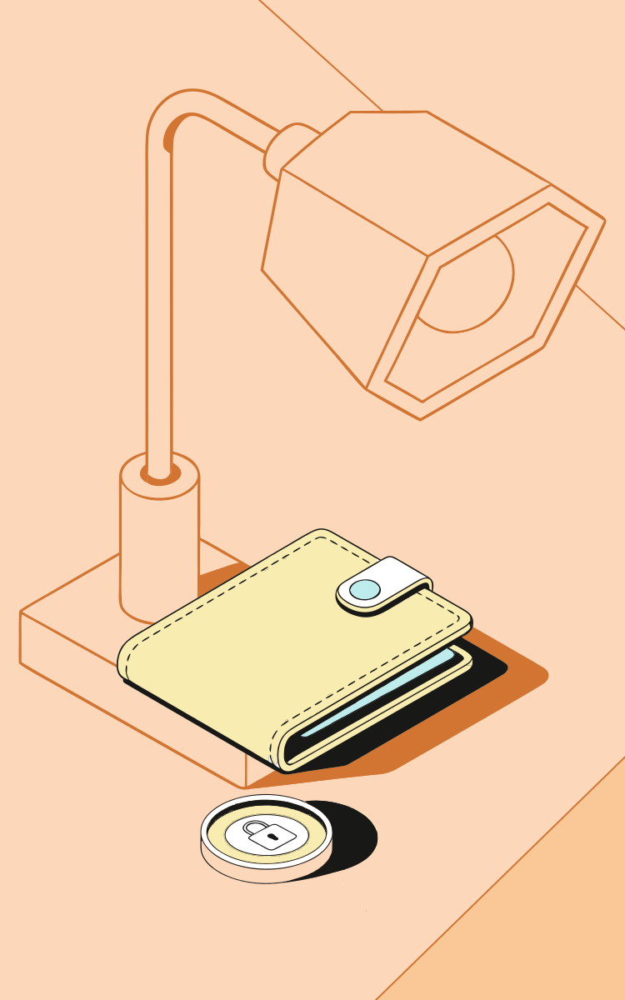
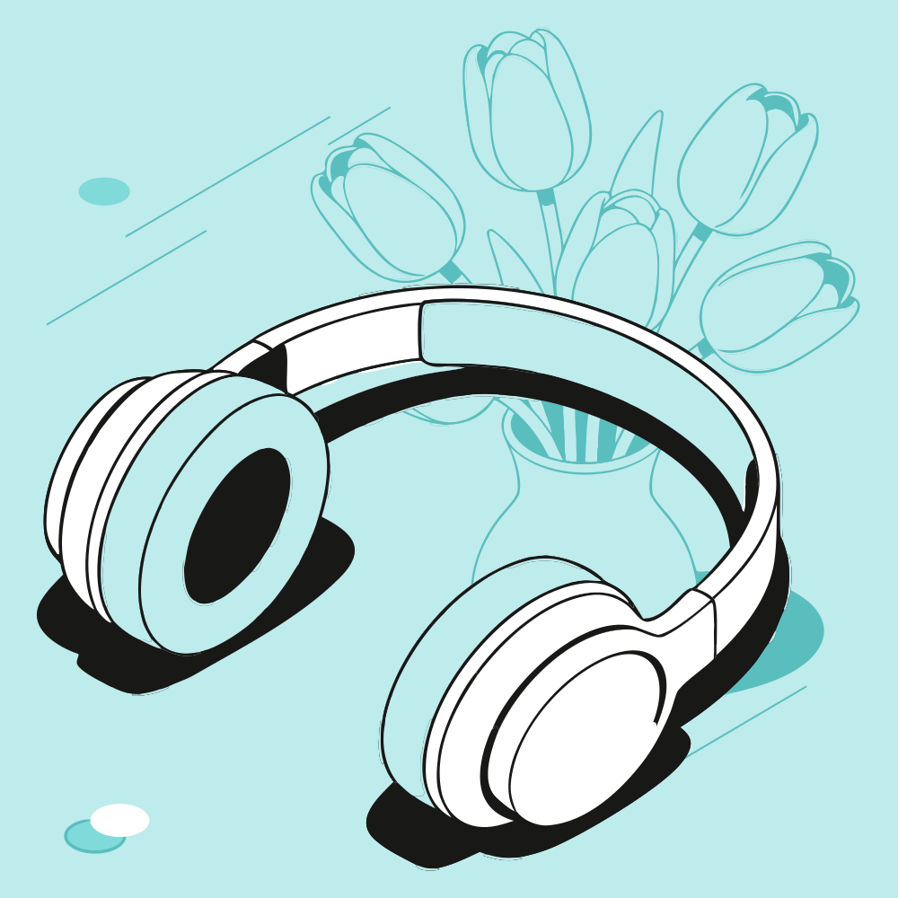

Состав
Автоматическая сборка векторных иллюстраций из исходной библиотеки.
Открыть редактор · Исходный код
Обучение
Ввод: «Пазлы, книга, ручка». 1200 × 750 · L · Лаванда. Фоновые объекты включены.
Скачать SVGФинансы
Ввод: «Кошелёк, монета». 750 × 1200 · L · Персик. Фоновые объекты включены.

Скачать SVGСосредоточенность
Ввод: «Наушники, тюльпаны». 1000 × 1000 · S · Бирюза. Фоновые объекты включены.

Скачать SVG